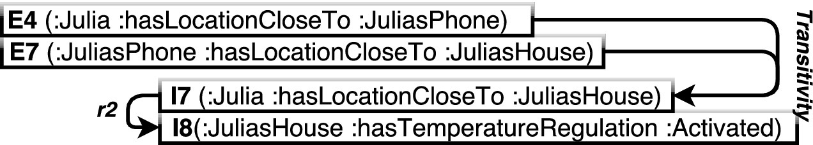

1 Introduction
Everyday Web applications must dynamically handle various types of contents generated by users or client sensors. Semantic technologies could improve these applications, but are currently under-exploited. One reason is that full-fledged semantic stacks are perceived as costly, unreliable server-sided architectures, in opposition with current (i.e. modular and client-side) Web design practices [19]. We have addressed this problem in [18], by proposing HyLAR, a reasoner that can be both used on the server and client sides. Our goal is to allow using reasoning for tasks currently located on Web application clients, that satisfy several conditions. We focus on datasets of relatively small size (< 50k triples) and target Web applications based on stable data models (TBoxes) and more varying model instances (ABoxes). State-of-the-art in semantic reasoning research work [13] aims at improving reasoning through maintenance algorithms such as incremental reasoning (IR). However, when the updated data is cyclic (i.e. facts that re-occur periodically), applications should not only rely on IR to optimize reasoning, as they are regularly exposed to overheads caused by re-deriving implicit facts that have been already derived in the past.
In this paper, we propose a maintenance approach inspired by IR that prevents successive re-derivations by tagging facts with respect to their provenance and validity. Our solution includes the following contributions:
- Faster deletions using validity tagging. We provide validity tagging for explicit facts and do not process overdeletion tasks. Instead, explicit facts are tagged as invalid at deletion time and as valid at re-insertion time.
- Faster re-insertions using provenance tagging. We track the provenance of all implicit facts (i.e. all possible derivations), which avoids having to re-evaluate them if they are reinserted in the knowledge base.
- Reasoning on the Web. We provide a rule-based reasoner that currently supports a subset of OWL 2 RL rules, usable on both JavaScript-enabled servers and Web browsers.
This paper is structured as follows. Section 2 formalizes and highlights the re-derivation overhead problem, in a scenario involving a mobile Web application. Section 3 presents our contribution with three algorithms: implicit fact tagging, tag-based KB update and fact selection filtering. Section 4 describes our prototype and enumerates the entailment rules it is currently capable to handle. Section 5 evaluates our solution by comparing it with IR and discusses the results with respect to different application settings. Section 6 overviews related work on reasoning profiles and optimizations. Section 7 concludes and draws perspectives of our work.
2 Problem statement
Web applications can be subject to frequent updates. Possibly re-occurring data can be re-inserted or re-deleted, which can cause significant computational overheads. We illustrate this issue with the scenario of a mobile Web application connected to a smart house: Julia uses this application on her smartphone to automatically regulate her house temperature when she approaches her house. The application locates her mobile phone either using its GPS sensor or by recognizing the network it is connected to. She will be considered close to her house either if her cell phone GPS coordinates correspond to her house neighborhood or if she connects the phone to the house local network. This activates temperature regulation and deactivates it otherwise. Julia's proximity from her house is the re-occurring data: the application infers or not this information as she moves back and forth with her cell phone, as she switches on and off the GPS sensor, or as she connects and disconnects her phone from the house network.
We use the following formalization, from Motik et al. [13]: a fact ${\rm\small {F}}$ can be explicit (i.e. provided at startup or update), implicit (i.e. derived as a rule consequence), or both implicit and explicit (i.e. explicitly stated and derived). A rule r has an antecedent, conjunction of facts ${\rm\small {F}}_i$ , $i \in \mathbb {N}$ ) and an implied consequence (a single fact ${\rm {I}}$ ); when it applies, the consequence is derived as an implicit fact: r :- ${\rm\small {F}}1 \wedge {\rm\small {F}}2\, \wedge \, ... \, \wedge \, {\rm\small {F}}x \rightarrow {\rm {I}}$ .
Application ontology. Julia's application in our scenario uses the following fixed ontology (Classes and Properties) and entailment rules.

Application instances and rules. Below are the initial explicit and implicit facts inferred via the Business Rules (Listing 4), which drive the application behavior. The set of initial explicit facts declares Julia, her cell phone, her house and the instance that activates temperature regulation in the KB, and assumes that Julia always carries her cell phone with her. The application can reason about their locations via r1 (as they are inferred as physical agents), and can switch on the regulation via r2.
We consider the following 3-steps scenario.
- Julia approaches her neighborhood with her cell phone. The application analyzes the phone GPS coordinates and adds the explicit fact E6. This allows the reasoner to infer I6 via r1 and I7 via Transitivity.
The application then enables temperature regulation as I7 triggers I8 via r2. - Julia enters her house and cuts off the GPS to save energy. The phone position becomes unknown. The application removes E6, which also triggers the removal of I6, I7, I8, and disables temperature regulation.
- Julia connects her phone to the house local network. The application inserts E7, causing I7 and I8 to be re-derived respectively via Transitivity and r2. 
Step 3 highlights the re-evaluation overhead caused by over-deletion in the IR algorithm: the deletion and reinsertion of explicit facts leads to the re-derivation of two implicit facts that have already been derived at first insertion.
3 Tag-based Incremental Maintenance
To avoid recurrent re-derivations, we propose to keep the origin of previously obtained inferences so that when already known facts re-occur, the reasoner can quickly retrieve their consequences. To do so, it must keep track of all facts, including deleted ones, and be able to assess their validity: explicit facts are tagged as valid/invalid, and implicit fact validity is retrieved using those of the explicit facts they have been derived from. When the reasoner receives an INSERT query, it only runs its inference algorithm on the explicit facts that have not been inserted before and simply validates the others. Processing DELETE queries only consists in invalidating the corresponding facts instead of removing them from the KB (as done in IR). At SELECT queries, the reasoner queries the knowledge base and filters the resulting facts according to their validity.
The speed of this process relies on the principle of storing explicit fact validity in memory and obtaining implicit fact validity from simple logic operations on these values: an implicit fact can originate from the disjunction of several sets of facts (explicit or implicit) that match the antecedent pattern of a same rule or from multiple rules, and rule antecedents are defined as conjunctions.
Finally, we introduce a fact forgetting mechanism to avoid KB inflation: each fact is tagged with the timestamp of its latest validity update, so that the oldest invalid facts are asynchronously removed when the KB size reaches a threshold.
In our scenario, when Julia switches the phone GPS off, the application “loses” its location and asks the reasoner to remove E6. But the reasoner only invalidates this fact. Then, the application sends a SELECT query on I8. The reasoner performs a simple logical operation (explained below) on I8 causes (E4, E6) that assesses that I8 is invalid, as E6 is invalid. It then does not return I8. When the phone connects to the house network, the application creates E7. The reasoner attaches it as alternative derivation of I7. At the next SELECT query, it deduces that I8 is valid as I7 is valid, and sends it back to the application. The next subsections detail the main elements of our Tag-Based (TB) maintenance approach: validity assessement, fact tagging, reasoning process and selection tasks.
3.1 Fact validity
Let Fe and Fi be respectively the sets of explicit and implicit facts in the KB. We propose to keep all facts (explicit and implicit) in the KB until the reasoning process is stopped or the fact forgetting mechanism triggered, and to assess their validity instead of removing them at DELETE queries. To do so, we tag explicit facts with a valid boolean indicator: ${f_e}.valid \in \mathbb {B}, f_e \in F_e$ , which is set to true on insertion and false on deletion. We tag implicit facts with a derivedFrom indicator that represents the minimal set of disjoint causes of an implicit fact. We define a cause C as a set of explicit facts that must all be valid to validate an implicit fact1: C = {fe | fe ∈ Fe }. Hence, ∀fi ∈ Fi , fi .derivedFrom = $\lbrace C_i\rbrace , i\in \mathbb {N} / \forall x, y, 0 \le x {\lt} y \le i, C_x \nsubseteq C_y, C_y \nsubseteq C_x$ .
We provide an isValid() function that checks the validity of an implicit fact using its derivedFrom tag. It evaluates the disjunction between the tag elements and for each element, the conjunction between the valid tags of the explicit facts referenced in this element: $isValid(f_i) = \vee _{C_i}\lbrace \wedge _{f_{ej}} \lbrace f_{ej}.valid\rbrace \rbrace , C_i\in f_{i}.derivedFrom, f_{ej}\in C_i$ . Implicit fact validity in our temperature regulation scenario is assessed as follows:
3.2 Implicit fact tagging
Each time an implicit fact is derived, Algorithm 1 is applied to set its derivedFrom tag. Let Fe (resp. Fi ) be the sets of explicit (resp. implicit) facts a newly inferred fact f have been derived from. In the general case, the algorithm builds the set resolvedExplicitCauses of resolved explicit causes by replacing implicit facts with their explicit causes2 and deduplicating these causes (lines 4-10). It then builds the set explicitCauses of explicit causes by distributing the initial set of explicit facts Fe into resolvedExplicitCauses (lines 14-16). It finally sets explicitCauses as derivedFrom tag of f – now tagged with a set of disjoint explicit causes – and terminates (lines 17-18).
Two optimizations allow avoiding unnecessary loops: (i) if no implicit fact is present (i.e. Fi is empty), the algorithm sets f.derivedFrom to Fe and terminates at line 3; (ii) if no explicit fact is present (i.e. Fe is empty), the algorithm sets f.derivedFrom to resolvedExplicitCauses and terminates at line 13.
3.3 Enabling tagging in reasoning
The KB update algorithm (Algorithm 2) performs the reasoning process while answering INSERT and DELETE queries. Let R be the set of rules and $F_e^+$ and $F_e^-$ the sets of explicit facts to be respectively added and removed (from the query). It first invalidates the explicit facts to be deleted, and validates those to be inserted (lines 2-6), so that $F_e^+$ only contains new facts to be evaluated at line 7. Hence, for all deletions and re-insertions, our approach allows to skip the whole evaluation loop (lines 9-13).
For the remaining facts in $F_e^+$ , the evaluation loop works very similarly to IR [13]: the reasoner restricts R to the set Rkb of rules that match at least one cause in the updated KB (Fe ∪ Fi ) in restrictRuleSet() (line 11), evaluates Rkb over Fe ∪ Fi (evaluateRuleSet(), line 12) and loops as long as new implicit facts are inferred. TB reasoning requires two additional steps: (i) at each iteration, the combine() function deduplicates identical facts by concatenating their causes and removes unnecessary causes3 (line 13), and (ii) when new implicit facts have been inferred (i.e. in the innermost loop of the evaluateRuleSet() function), it calls Algorithm 1 to set the fact causes in their derivedFrom tags (line 12). After the evaluation loop, the algorithm terminates and returns Fe ∪Fi , that reflects the KB changes, namely the updates in $F_e^+$ and $F_e^-$ and the valid and derivedFrom tags of facts.
3.4 Fact-filtering
The fact-filtering algorithm (Algorithm 3) is applied after SELECT queries to filter out valid facts. As these queries are time-critical for the application and this step represents an overhead compared to other approaches, this algorithm must be kept fast. Let F be a query result set of facts. The algorithm performs a single loop over F to construct – and return – the set of valid facts V of F: V = {fe ∈ F∩Fe /Fe .valid = true}∪{fi ∈ F∩Fi /isValid(Fe ) = true}4.
4 Implementation
Our approach targets a particular working context: OWL reasoning embedded in Web applications. This differs from traditional setups where regular OWL (e.g. Pellet5) or rule-based (e.g. RDFox6 or CHR7) reasoners can be found. Hence, we implemented our approach in HyLAR8 [17], a rule-based reasoner that includes both the IR algorithm from [13] and our tag-based algorithms: update (Algorithms 1 and 2) and selection (Algorithm 3) from Section 3. It currently processes the following subset of OWL 2 RL rules [12] (section 4.3):
We restrained to these rules as they seemed to us of reasonable complexity (regarding the fact that applications are supposed to perform reasoning tasks on diverse clients) whilst corresponding to the needs of “average” Web applications (i.e. manipulating typed objects – instances – and inheriting their properties from classes). However, this set of rules can be extended: the reasoner similarly processes entailment and business rules, application developers can add entailment rules among business logics ones, without modifying the reasoner package itself. HyLAR also supports consistency checking in both IR and TB algorithms. Entailment rules involving disjointness, complementness or type checking can be provided as built-in rules using the ”false” fact as consequence. HyLAR handles this fact as any other and uses TB maintenance approach to efficiently perform rule-based consistency checking. HyLAR runs on both server (Node.js9 5.1.1) and client (Browserify10) sides, which allows its integration into frameworks designed to optimize reasoning process location, such as [18]. HyLAR benefits from JavaScript's asynchronous patterns (promises, callbacks), Web workers (on browsers) and event emitters (on Node.js), allowing for background task processing. It is composed of the modules depicted in Figure 1.
- Controller: handles ontology loading (parsing and classification) and querying requests: inferences on INSERT and DELETE queries (using IR or tag-based algorithms) and filtered SELECT queries for tag-based reasoning.
- Parsing Interface: integrates rdf-ext's RDF/XML parser and SPARQL.js11 library, and is able to convert triples (as described in RDF Interfaces 1.012) into turtle (for direct triplestore insertion/deletion) and facts (for reasoning).
- Storage Manager: based on rdfstore.js13 [7], this module handles ontology loading, updates and queries.
- Reasoner: holds and processes rules using a pattern matching mechanism; its engine both includes an incremental and a tag-based algorithms.
- Dictionary: indexes all triples registered in the store and their representations as facts in the KB; this accelerates validity checking at selection time.
- Logics: contains first-order logic operations: fact instantiation, fact tagging, fact merging (combine()), and rule restriction (restrictRuleSet()).
5 Evaluation
We evaluate our tag-based algorithm by comparing it to Motik et al.’s incremental reasoning (IR) algorithm based on DRed, described in the Delta-Reasoner [13]. We chose to compare those algorithms on the same implementation rather than comparing them on different applicative solutions: our goal is not to provide the fastest reasoner, but rather to offer an optimal solution for maintaining datasets incrementally in Web browsers using JavaScript. We evaluate these algorithms for ontology classification and initial insertion, insertion of new triples, deletion, insertion of known triples and selection. The three latter represent Web applications cycles as illustrated in Section 2. We run each algorithm in Google Chrome v.54.0.2840.99, on a Lenovo Ideapad 700-15ISK (Intel Core i5-6300HQ @2.3GHz - 4GB RAM).
5.1 Datasets and rules
We generated 3 datasets (O1, O2 and O3) using the Lehigh University Benchmark (LUBM) [5]. They are based on the Univ-Bench Ontology14 schema, which has $\mathcal {ALEHI}+$ expressivity and contains 36 SubClassOf, 6 EquivalentClasses, 5 SubObjectPropertyOf, 1 TransitiveObjectProperty, 21 ObjectPropertyDomain, 18 ObjectPropertyRange and 4 DataPropertyDomain axioms, as well as 43 Class Assertions, 25 Object Property Assertions and 7 Data Property Assertions15. O1, O2 and O3 contain respectively 8824, 7394, and 5759 triples, and correspond to the initial insertion. The evaluation uses the same rule sets as in Section 4.
5.2 Practical evaluation
We ran 5 evaluation tasks: classification and initial dataset insertion (CLASSIF+INIT), insertion, deletion, re-insertion and selection for both IR and TB algorithms16. Inserted and deleted data have also been generated with LUBM and contain 500 triples. Each task applies the five rule sets described above. Our results are depicted in Figure 2. Processing times for each task are written in milliseconds. This table also shows the time difference betweeen IR and TB (Diff.), as well as the performance of TB (Perf.), i.e. the percentage of time gained if using our solution instead of IR, for a particular task. The “10 CYCLES” column sums the results for (i) classification and initial insertion, (ii) insertion, and ten cycles of (iii) deletion and (iv) re-insertion. Such cycles correspond to applicative scenarios such as the one described in Section 2.
- Classification and initial insertion.As expected, TB maintenance does not outperform IR for these tasks, as it adds the cost of tagging facts. Although the number of rules and the size of the schema influence these results (e.g. O1 is more costly on TB as it is more expressive), RL profile reasoners do not target large classification tasks (an OWL-EL reasoner would probably be more suitable). Moreover, in Web applications, the classification and initial dataset insertion usually involve shared data and their results can therefore be computed on a server and cached for all clients. As tagging time is related to the number of triggered rules and their possible recursivity, its overhead is reduced for already closed datasets.
- First insertion.Again, it takes longer for TB maintenance to perform a first insertion due to the additional tagging step. In this case, we can note that the instance number and the expressivity influences the results, as all facts - including instances - have to be tagged while firstly inserted in the ontology. Results show that this overhead varies according to the number of activated rules (i.e. the number and variety of OWL constructs).
- Deletion.As expected, deletion is much (more than 50%) faster on TB maintenance, as IR over-deletion is replaced with a single iteration over the KB. Instance numbers significantly affect processing times in both algorithms.
- Re-insertion.Re-inserting the same triples is also much faster on TB maintenance, as re-inserted triples do not have to be re-evaluated. TB performs particularly well with high expressivity (such as transitivity + inverse and equivalence rules). As in the deletion process, the number of instances is the most influential parameter.
- Selection.Selections in IR are straightforward and give stable processing times. They are slower on TB maintenance as our algorithm checks the validity of each fact returned by the KB. With respect to IR, TB maintenance could then significantly impact SELECT queries with high numbers of triples or highly interrelated datasets. However, SELECT operations are much faster than the previous ones. Hence, despite its important value in percentage, this overhead sounds acceptable in terms of absolute times (about twenty milliseconds), as it only corresponds to a couple of frame rates of the most performant Web applications.
- Multiple cycles.Here, we can see all the interest of our approach: the initial tagging cost at classification and first insertion is re-gained along deletions/re-insertion cycles. Due to space limitation, we only show figures for 10 cycles. However, for all situations in our evaluation, TB maintenance outperforms the given IR implementation from 4 cycles, and its gain in total computing time exceeds 50% for 100 cycles.
5.3 Evaluation synthesis
This evaluation shows that TB maintenance outperforms this implementation of the IR algorithm when data are being cyclicly deleted and reinserted into the reasoner, despite its cost on first insertions and selections. For applications going through hundreds of such cycles, TB maintenance can represent a massive performance improvement. This approach can particularly fit applications that rely on constantly changing data. For instance, context-aware applications that take adaptation decisions according to environmental (sensor) data can now integrate their own Web-based reasoner, process these data in Web clients and behave autonomously.
5.4 Discussion
Inserting a fact in a KB requires performing a transitive closure of the graph. The number of times a rule-based reasoner executes the rule evaluation loop depends on the data and on the expressivity of the used DL17. As tag-based is a maintenance approach, it does not aim at reducing the whole reasoning process complexity, but at performing it as rarely as possible. Hence, it can be considered as “storing” the reasoning complexity in causes to avoid recomputing it at deletions and rederivations. However, our evaluations show that in a common use case, it keeps affordable. We then propose a method to ensure its cost stay limited. In order to limit both the number of causes and the inflation of the knowledge base size (which is higher in TB maintenance as explicit facts are not removed), we suggest to limit the number of explicit facts. Our underlying hypothesis is that our reasoner targets Web applications that can run on small devices such as smartphones. It is not intended for storing application history but to receive facts that will trigger rules at the application level. In our scenario, the phone GPS coordinates are raw numeric values. They are not inserted “as is” in the reasoner but are transformed into facts that fit the application requirements (the phone is located in the house neighborhood). In these conditions, client-side reasoning can save both Web application developers’ time while constructing their datasets (by using regular Semantic Web modeling tools), and bandwidth (by leaving saturation and decision processes up to the clients). Using a known set of explicit tags, TB reasoning allows application designers to first-insert and delete these facts at bootstrap or asynchronously, to pre-compute the tagging step and ensure performance at runtime.
6 Related work
6.1 OWL profiles and Web reasoning
OWL 2 profiles18 help adjusting the trade-off between expressivity and efficiency. Each profile (EL, QL, RL) has its own specificities and targets different reasoning tasks. Reasoning tasks differ in terms of data, query and taxonomic complexity [12]. The choice of the appropriate OWL profile is crucial to reduce reasoning overheads, but not always sufficient as reasoners mostly rely on materialization (e.g. pre-compute and store inferences [14]) which is computationally intensive. EL is suitable for very large TBoxes and would not fit Web applications such as the one we describe in Section 2 as we expect their ABoxes to be heavier than their TBoxes. QL is appropriate for applications that manipulate high volumes of instances. It relies on query rewriting, which is not appropriate for Web applications that require fast query answering such as in our scenario. RL is more suitable, as it allows all axioms to be represented as logical implications and rules to be constructed as needed: to enable reasoning about OWL constructs, one can define both entailment rules corresponding to the expressive power expected for the application, and application-specific rules. RL reasoners can involve a large amount of explicit facts [11], and inferences are pre-computed and explicitly stored, so that queries can be answered simply by querying the store [8]. This makes this profile suitable Web applications that require flexibility and need fast query answering.
6.2 Incremental reasoning in RL
Web applications also need to handle numerous data updates. Reasoners embedded in those applications can then rely on IR [13] to avoid entire recomputations. Several improvements of IR currently exist. The fact-dependency tracking from [4] is similar to our derivedFrom tagging. However, unlike their solution, we track references of facts and provide improved query answering through validity checking in comparison to their query reformulation. The counting method [6] also tracks alternative derivations for each fact but does not support recursive rules. However, even counting algorithms that support recursion such as in [1] do not reduce the re-insertion cost as alternative derivations are not explicitly stated but rather counted. Nowadays, most incremental maintenance algorithms are based on Gupta et al.’s delete-rederive (DRed) [6]. DRed improves performance as it ensures that the rules apply only to modified facts and thus prevents complete and successive recalculations of the KB on each update. The solution presented in [10] relies on DRed for the classification task, but it exclusively targets $\mathcal {EL+}$ ontologies with complex and changing TBoxes to tackle re-classification issues, which differs from our approach. In [15], Motik et al. tackle the derivation redundancy issue encountered in the overdeletion step using a semi-naive materialization approach that combines backward and forward (BF) chaining. This improvement however still relies on rule matching and evaluation at deletion, whereas our solution avoids overdeletion and re-derivation. They implemented this approach in the RDFox triplestore [16] that targets highly scalable applications. Yet, the HyLAR Reasoner is a JavaScript solution that targets Web browsers, which is currently not possible with RDFox. Hence, we did not compare those two reasoners. Nor did we compare BF with TB because the complex data structures used in BF (several rules bodies that would be duplicated into annotated queries) are not efficient in JavaScript (they actually perfom worse than regular IR). The Constraint Handling Rules [3] language also allows efficient rule-based reasoning and has been implemented in JavaScript. Unfortunately, it is not able to keep track of inferences, which prevents our fact-tagging approach to be used on this reasoner.
7 Conclusion
This paper addresses the issue of overdeleting and re-deriving facts in DRed Incremental Reasoning (IR). We propose a Tag-Based (TB) incremental maintenance approach that improves the DRed-based Incremental Reasoning (IR) overdeletion and re-derivation steps with three algorithms: implicit fact tagging, tag-based update and fact-filtering. The first two are executed to update the KB and the third to filter valid facts out of SELECT query results. Our approach targets Web applications that face multiple cycles of data deletions and reinsertions. Our complexity analysis shows that, to the initial cost of fact tagging at first insertion and validity assessment at selection, the complexity of re-insertion and deletion operations drops to linear, regardless of the reasoning conditions. Evaluation results show that the cost of TB maintenance is slightly higher for first insertions and for selections, but outperforms an implementation of IR at deletion and reinsertion. This cost is also re-gained within a few cycles.
In order to stimulate the adoption of semantic technologies in the Web community, it is implemented in the HyLAR reasoner, that proposes both IR and TB algorithms and is available as server-side (Node.js) or client-side (Bower) packages. HyLAR ships with a basic set of entailment rules that can be extended or reduced according to applications needs, and can be integrated with other tools, such as popular JavaScript frameworks, as well as our reasoning location adaptation framework [18].
As future work, we will extend the set of built-in OWL rules and stream reasoning capabilities to deal with larger datasets, and explore pattern mining techniques to discretize frequent sets of causes to reduce the KB size. We also plan to provide SWRL support in the reasoner to easily integrate it with authoring tools, such as Protégé19, to foster Semantic Web application adoption.
Acknowledgement
This work is supported by the French ANR (Agence Nationale de la Recherche) under the grant number < ANR-13-INFR-012 > .